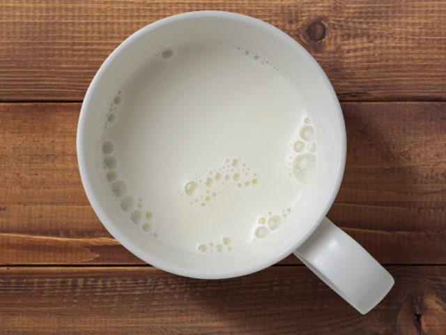

SALMÃO
Este peixe contém quantidades significativas de ômega 3 e vitaminas1.
TOMATE
Por ter muita água, o tomate possui função diurética5.
OVO
O ovo é uma fonte extraordinária de proteína [9] e contém vitaminas essenciais para fornecer energia6.
LEITE

O leite é uma ótima fonte de cálcio. Seu consumo frequente em versões com pouca gordura é considerado importante para ajudar a proteger os ossos7.
ASPARGOS
Aspargos são vegetais com baixo teor calórico, ricos em fibras, minerais e vitamina E8.
MAÇA

Esta fruta é uma boa fonte de fibras solúveis e insolúveis e contém nutrientes com função antioxidante. Recomenda-se consumir com a casca, após higienização adequada9